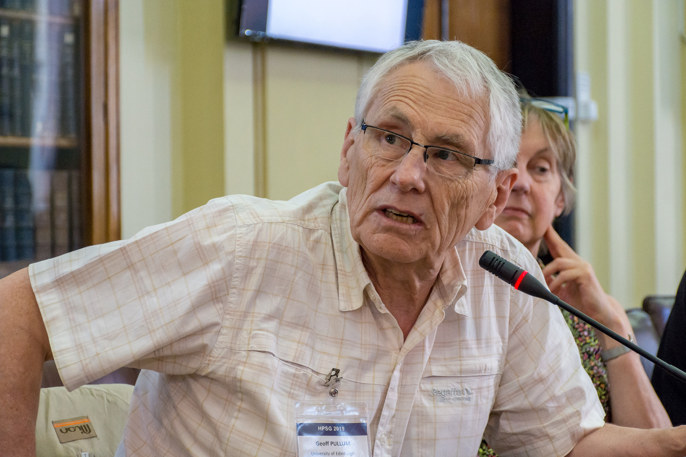

English language and linguistic theory:
A tribute to Geoff Pullum
|
Welcome to the Festschrift for Professor Geoffrey K. Pullum, an absolute titan in the field of linguistics. Since leaving a brief career as a professional musician, during which time he was on two of the biggest selling UK albums of the 1960s, Geoff has dedicated his life to the rigorous study of language, particularly English, and has significantly advanced our understanding of its structure and function. As of the end of June, his personal website lists exactly 300 publications, four of which are either in preparation or forthcoming. They covered a broad spectrum of linguistic disciplines, including syntax, phonology, semantics, philosophy of language, computational linguistics, and even a bibliography of pragmatics. His insights have not only enriched the academic discourse and also provided valuable frameworks for practical applications in language teaching and computational language processing, but he has endlessly entertained us with his blog posts, articles, radio programs, and, if you've been lucky enough to have corresponded with him, his emails. A workshop celebrating the career of Geoff Pullum will be held in room G.06 in 50 George Square, University of Edinburgh. August 31, 2023, 9am-6pm.
We plan to make recordings available. If you'd like more information, please contact Brett Reynolds.
|

Left: Geoffrey K. Pullum playing guitar for the Dead Tongues. Right: Geoffrey K. Pullum. |
The program is listed below.
Program
Session 1
9:30-9:45
Intro / Head of LEL & Brett Reynolds
Welcome & opening remarks
9:45-10:25
Talk / Pauline Jacobson
From GPSG to Categorial Grammar (and partway back again):
Some coordination evidence
10:25-11:05
Talk / Mark Steedman
Model-Theoretic Syntax for the working syntactician
11:05-11:20
Break
Session 2
11:20-12:00
Talk / Chris Potts
Characterizing unbounded dependencies in English preposing in PP constructions
12:00-12:40
Talk / Philip Miller and Peter Culicover
Lexical be
12:40-1:40
Lunch
Session 3
1:40-2:20
Talk / Nik Gisborne
Embedded clause structure in Dependency Grammar
2:20-3:00
Talk / Brett Reynolds
More and less are never adverbs
3:00-3:15
Break
Session 4
3:15-3:55
Talk / John Payne
Attributive adjective ordering and the complement-modifier distinction
3:55-4:35
Talk / Ryan Nefdt
How to be neutral about linguistic infinity: the Pullum Paradox
4:35-5:15
Talk / John Joseph
Pullum's progress
5:15-5:30
End / Brett Reynolds & Geoff Pullum
Closing Remarks
5:30–
Reception
Selected publications
- Pullum, Geoffrey K. (1977): Word order universals and grammatical relations. In Peter Cole and Jerrold Sadock, editors, Syntax and Semantics 8: Grammatical Relations, 249–277. Academic Press, New York. doi:10.1163/9789004368866_011.
- Derbyshire, Desmond C.; Pullum, Geoffrey K. (1979). "Object initial languages". Working Papers of the Summer Institute of Linguistics, University of North Dakota Session. 23 (2). doi:10.31356/silwp.vol23.02.
- Pullum, Geoffrey K. (1979). Rule interaction and the organization of a grammar. Outstanding dissertations in linguistics. New York: Garland.
- Zwicky, Arnold M.; Pullum, Geoffrey K. (1983). "Cliticization vs. Inflection: English N'T". Language. 59: 502-513.
- Gazdar, Gerald; Klein, Ewan; Pullum, Geoffrey K.; and Sag, Ivan A. (1985). Generalized phrase structure grammar. Basil Blackwell, Oxford.
- Pullum, Geoffrey K., and Ladusaw, William A. (1986). Phonetic Symbol Guide, University of Chicago Press.
- Huddleston, Rodney D., and Pullum, Geoffrey K. (2002). The Cambridge Grammar of the English Language, Cambridge University Press.
- Pullum, Geoffrey K.; Scholz, Barbara C. (2002). "Empirical assessment of stimulus poverty arguments". The Linguistic Review. 19: 9-50.
- Huddleston, Rodney D.; Pullum, Geoffrey K.; Reynolds, Brett (2022). A student's introduction to English grammar (2 ed.). Cambridge: Cambridge University Press.
POPULAR BOOKS
- Pullum, Geoffrey K. (1991). The Great Eskimo Vocabulary Hoax and Other Irreverent Essays on the Study of Language, University of Chicago Press. ISBN 0-226-68534-9. (See also Eskimo words for snow)
- Liberman, Mark, and Pullum, Geoffrey K. (2006). Far from the Madding Gerund and Other Dispatches from the Language Log, William, James & Company. ISBN 1-59028-055-5
- Pullum, Geoffrey K. (2018). Linguistics: Why it matters. Cambridge: Polity. ISBN 9781509530762